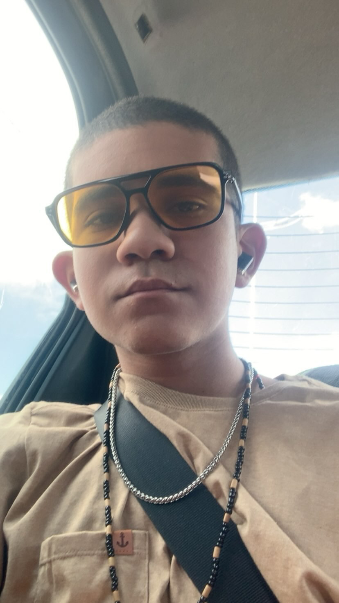

Fundador da Loborgy Studios | Programador Criativo, Criador de IA & Médium
Transformando código, arte, espiritualidade e inteligência artificial em experiências digitais com alma.
Loborgy StudiosFlora OSMédium de UmbandaUkulelePython & IAUI/UX Glassmorphism

7+Anos Código
LoborgyEstúdio Solo
AxéEspiritual
02
Sobre Mim
A união entre lógica, sensibilidade, arte e independência pessoal.
Independência & Foco no Futuro
Solteiro e focado 100% no meu crescimento, na minha arte e na minha empresa.
Visão Criativa
Não construo apenas telas ou scripts; crio atmosferas que parecem respirar e contar histórias autênticas.
Ética & Sensibilidade
A sabedoria do terreiro e a empatia humana guiam minhas escolhas técnicas e profissionais todos os dias.
Ambiyção Inabalável
Construir a Loborgy Studios sozinho agora é apenas o primeiro degrau para o futuro que já estou materializando.
03
Raízes, Ancestralidade & Família
A herança viva de criatividade, liderança cultural e maestria artesanal dos meus pais.
Venho de uma família de artistas, realizadores e empreendedores com propósito. A literatura, o pensamento crítico e o cuidado artesanal correm nas minhas veias através de exemplos reais dentro da minha casa.
04
Loborgy Studios
O estúdio independente fundado por Dhimitri Carvalho para forjar ecossistemas digitais com alma.
Um Estúdio Nascido da Vontade Pura de Criar
“Forjando Ecossistemas Digitais com Alma e Inteligência”
A Loborgy Studios nasceu da certeza de que tecnologia e emoção podem coexistir. Estou construindo essa empresa sozinho, do zero, linha por linha, com o compromisso inabalável de crescer e liderar soluções inovadoras em IA, design sci-fi e automações de ponta.
Aqui, cada produto é tratado como uma obra autoral, com identidade marcante e arquitetura robusta.
Pilares do Estúdio
05
Flora OS & Flora AI
VTuber com inteligência viva, síntese de voz e interface futurista em desenvolvimento autoral.
Em Desenvolvimento Ativo
Flora: O Organismo Digital Vivo
Flora é o projeto mais ambicioso da Loborgy Studios. Muito além de um simples chatbot, trata-se de uma entidade com personalidade generativa, síntese vocal com expressividade e uma interface de sistema operacional que transforma interações virtuais em experiências envolventes.
A raiz que ancora minha alma, guia minha mediunidade e ilumina cada linha de código.
A Força do Terreiro & da Mediunidade
Princípios Espirituais na Vida e no Trabalho
Presença e Conexão Sagrada
07
Música & Ukulele
Harmonia, dedilhados e sensibilidade nas quatro cordas quando o código descansa.
Vídeos Gravados Tocando Ukulele
08
Galeria Pessoal & Estilo
Registros reais de Haru: estilo com óculos aviador, guias espirituais e criações de UI.
09
Projetos & Tecnologias
Aplicações, bots inteligentes, protótipos de IA e designs autorais desenvolvidos por Dhimitri.
Nível de Habilidades Técnicas & Artísticas
10
Apoie com Pix & Conecte-se
Fortaleça o crescimento independente da Loborgy Studios e envie uma mensagem diretamente para Dhimitri.
Chave Pix OficialApoie o Dev
Contribua com a Loborgy Studios
Se você valoriza meu trabalho, quer me dar uma força para adquirir novos equipamentos ou apoiar o desenvolvimento do Flora OS, qualquer contribuição via Pix é recebida com enorme gratidão e axé!